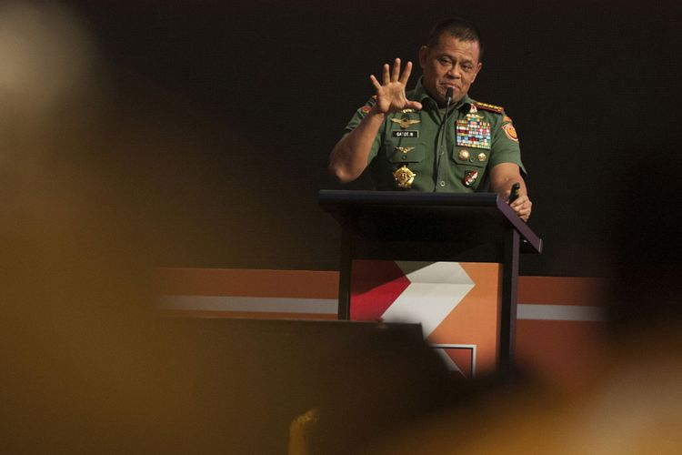

Panglima TNI Mengaku tak ditegur Jokowi soal Polemik pernyataannya
MOH. NADLIR
KabarKabur.com - 27/09/2017, 16:19 WIB

(ANTARA FOTO/NYOMAN BUDHIANA)
JAKARTA, kabarkabur.com - Presiden Joko Widodo telah meminta penjelasan Panglima TNI Jenderal TNI Gatot Nurmantyo atas pernyataannya yang menimbulkan polemik.
Gatot menyebut ada institusi non-militer yang membeli 5.000 pucuk senjata.
Terkait itu, Gatot merasa tidak mendapat teguran atas pernyataannya yang menjadi polemik.
"Siapa yang kena tegur? Saya lapor ke Presiden," kata Gatot di Kompleks Parlemen DPR RI, Jakarta, Rabu (27/9/2017).
Gatot juga enggan mengungkapkan isi pembicaraannya dengan Presiden Jokowi.
Ia berdalih, isi pembicaraannya itu hanya boleh diketahui Presiden Jokowi karena merupakan informasi intelijen.
Bahkan, Menteri Pertahanan atau Menteri Koordinator Bidang Politik, Hukum dan Keamanan pun tidak ia informasikan.
"Tanggapan Presiden tidak boleh saya sampaikan. Karena Anda bukan Presiden. Yang saya sampaikan adalah informasi intelijen. Maka hanya Presiden yang boleh tahu," ujar Gatot.
"Kemarin yang saya sampaikan belum akan terjadi. Maka semuanya informasi hanya boleh saya sampaikan kepada atasan saya Presiden. Menko Polhukam pun tidak Menhan pun tidak," tambah dia.
Presiden Jokowi menerima penjelasan Panglima TNI saat bertemu di Bandar Udara Halim Perdanakusuma, Jakarta, Selasa (27/9/2017) malam, saat Jokowi tiba dari kunjungan kerja di Provinsi Bali.
Jokowi mengaku tidak bisa mengungkapkan soal penjelasan yang disampaikan Panglima kepadanya. Menurut dia, tidak semua informasi bisa disampaikan ke publik.
Ia justru meminta publik untuk mengacu pada pernyataan yang disampaikan Menteri Koordinator bidang Politik Hukum dan Keamanan Wiranto.
"Saya kira penjelasan dari Menko Polhukam sudah jelas. Saya kira tidak usah saya ulang lagi," ucap Jokowi.
Penulis : Moh. Nadlir
Editor : Sandro Gatra